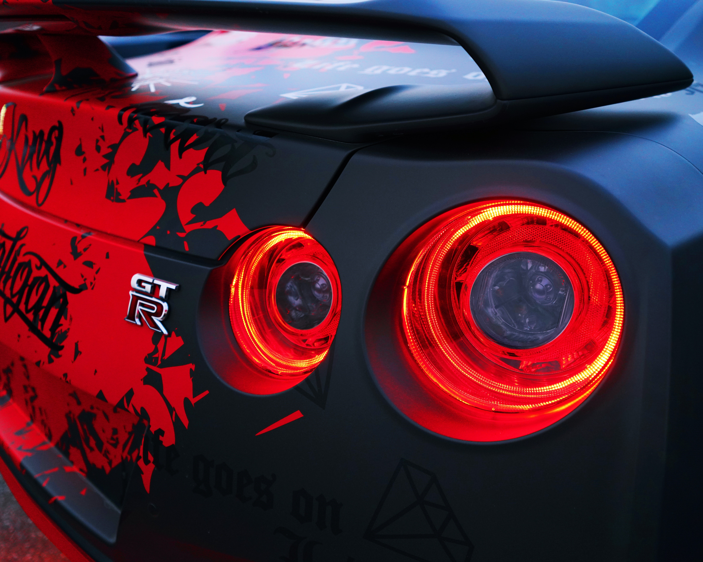
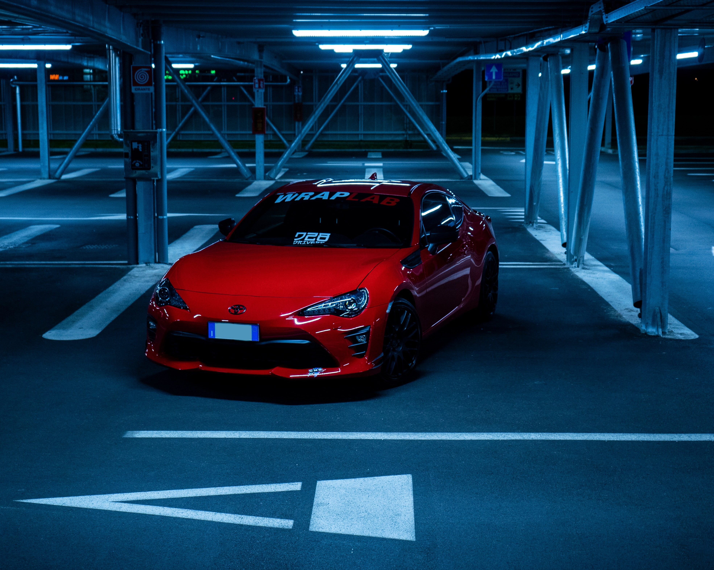
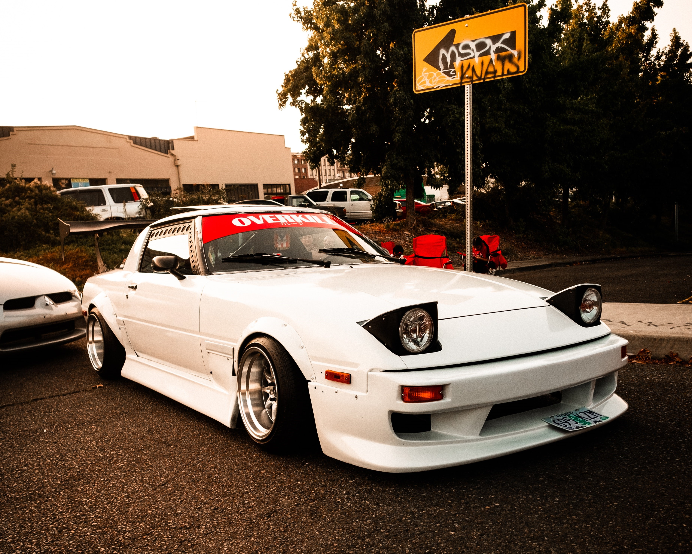
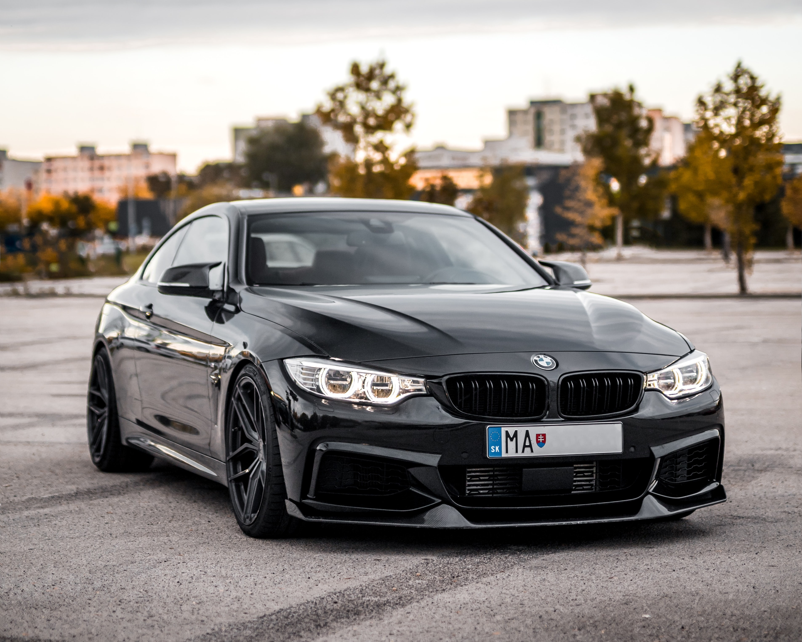

My Projects

Toyota Nissan GT-R R35
Nissan has upgraded the GT-R yet again- this time delivering improved throttle response and better...
More
Porsche 911
The Porsche 911 (pronounced Nine Eleven or in German: Neunelfer) is a two-door 2+2 high perfo...
More

Toyota 86
The Toyota 86 and the Subaru BRZ are 2+2 sports cars jointly developed by Toyota and Subaru, manu...
More

Mazda Rx-7
The Mazda RX-7 is a front-engine, rear-wheel-drive, rotary engine-powered sports car that was manufa...
More

BMW M4
The BMW M4 is a high-performance version of the BMW 4 Series coupes and convertibles developed...
More